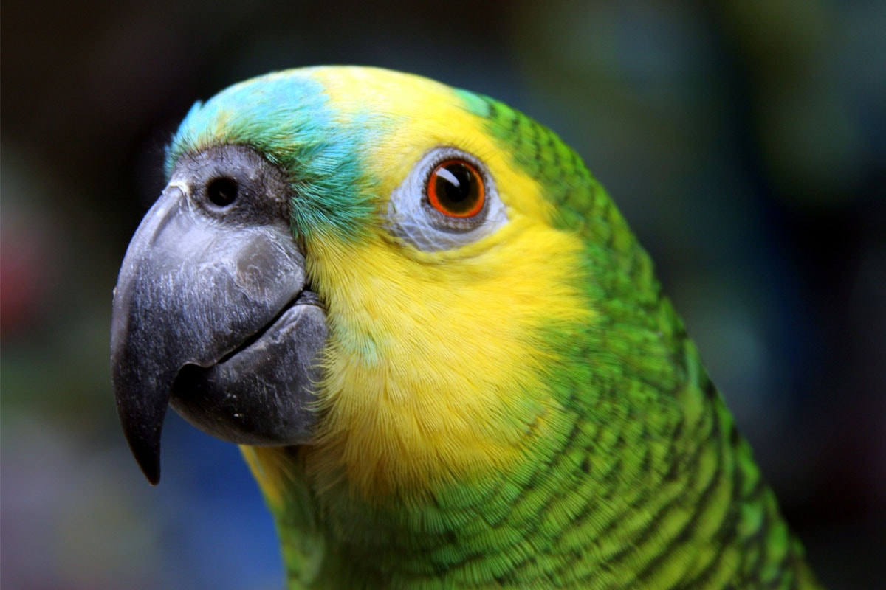

Papagaio
Psittacidae
| Reino: | Animalia |
| Classe: | Aves |
O papagaio, também conhecido como louro,
loiro, ajeru, ajuru, jeru,
juru,ou nore (do malaio nori), é uma das muitas aves pertencentes
à ordem dos Psitaciformes, família Psittacidae, principalmente do gênero
Amazona. Podem viver até 80 anos em cativeiro e, regra geral, forma um casal para
toda a vida. Os papagaios têm, como características, um bico curvo e penas de várias cores, variando muito
entre as diferentes espécies. Alguns papagaios são capazes de imitar sons e, inclusive, a fala humana.
Estão, junto com os corvos, entre as espécies de aves consideradas mais inteligentes. A família Psittacidae
inclui, também, as araras, periquitos, maracanãs, jandaias e apuins. Seu comercio ilegal é um dos principais
fatores que ameaça sua existência. Mede de 35 a 37 cm. de comprimento e pesa cerca de 400 gramas. Se
distingue pela cabeça amarela, com azul-esverdeado na fronte e bochecha, narinas escuras, ombros vermelhos
delineados com amarelo, asa com parte vermelha e extremos azul-escuro. Resto do corpo geralmente verde, mais
claro entre o ventre as penas. Sua voz é bem típica: É conhecido por ser um bom “falador”. Atualmente,
muitas espécies já foram extintas ou estão em risco de extinção por causa do comércio ilegal.
Os nativos do Novo Mundo utilizavam os papagaios como animais de estimação, mas
também o usavam como alimento e suas penas eram muito apreciadas como adornos corporais.
Algumas tribos venezuelanas tinham um modo peculiar de caçar papagaios. Amarravam um
papagaio manso e treinado na copa de uma palmeira e o próprio índio se camuflava entre as folhas da planta.
O papagaio começava a gritar bem alto pedindo ajuda e logo a copa estava cheia de companheiros solícitos. O
índio ia simplesmente laçando as aves e quando estava satisfeito espantava o resto do bando, desamarrava seu
papagaio e este parava de gritar.
Pato
Anatidae
| Reino: | Animalia |
| Classe: | Aves |
O pato, no sentido amplo (lato sensu), é uma ave que
pertence à família Anatidae. Em um sentido menos amplo, mas não Stricto sensu, é uma classe de
tamanho definindo aves geralmente menores que os anserídeos (gansos e cisnes) e podem ser encontradas tanto
em água doce como salgada. Os patos alimentam-se de vegetação aquática, moluscos e pequenos invertebrados e
algumas espécies são aves migradoras.
Podem-se identificar os machos principalmente pela coloração diferente mais vistosa
(visto que a grande maioria das espécies de patos tem dimorfismo sexual), e também por diferenças
comportamentais. Algumas espécies de patos (quer selvagens, quer domesticadas ou criadas em cativeiro) são
utilizadas pelo homem na alimentação, vestuário (as penas) e para entretenimento (caça).
O pato é um dos poucos animais da natureza que anda, nada e voa com razoável
competência.Também é um dos animais que conseguem dormir com metade do cérebro e manter a outra em alerta. É
dotado de perfeito senso de direção e comunidade.